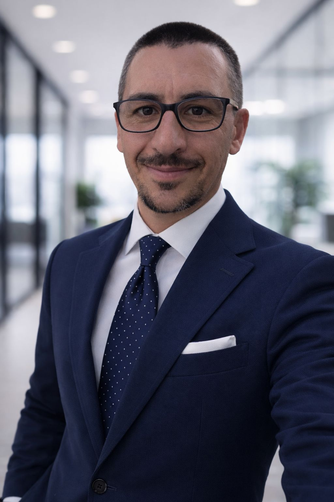

Falanghina nel bicchiere, Inter nel cuore, soul nelle cuffie.
Un sogno da realizzare: il giro della Sardegna in bici.
il prossimo traguardo in sella (salite escluse, se possibile)
i bicchieri di Falanghina di una vita. Con moderazione, almeno sulla carta
una sola squadra. Neroazzurra. Non si discute
Sono Fabrizio, campano di nascita.
M scorre ‘o sang napulitan dint'e ven.
Per lavoro giro l’Italia in lungo e in largo, da Nord a Sud, dalle montagne al mare. In oltre 25 anni ho visto città, alberghi e soprattutto tante persone, e ho scoperto che i ricordi più belli sono quasi sempre gli incontri.
Il Veneto è il mio punto di partenza e di ritorno. Qui il Prosecco è quasi una religione, ma io resto fedele alla mia Falanghina. Ognuno ha le sue certezze!
Quando non viaggio per lavoro, viaggio per piacere: in bici, con la macchina fotografica al collo, o solo con la voglia di vedere un posto nuovo. E se capita un tramonto bello, mi perdo lì dietro volentieri.
Sono curioso, pratico e con la testa sempre in movimento. Mi piace capire come funzionano le cose e, quando manca uno strumento che mi serve, me lo costruisco da solo. Tecnologia e intelligenza artificiale sono diventate le mie complici.
La domenica ideale? Una pedalata con gli amici, l’Inter in tv, un buon bicchiere e del soul in sottofondo. Con qualcosa di buono da mangiare, ovviamente.
Nel cassetto ho due desideri: girare tutta la Sardegna in bici e trovare un amico a quattro zampe che mi accolga quando torno a casa.
Di mestiere faccio il consulente nell’hospitality da oltre 25 anni: tecnologia, alberghi, persone e tante storie da raccontare. Ho percorso l’Italia per lavoro, ora voglio percorrere il mondo per passione. Ma questo spazio è dedicato alle cose più belle: quelle che faccio per passione, non per lavoro.
Gravel, strada, cicloturismo e qualche rullo quando il meteo fa il difficile. Mi piace scoprire percorsi nuovi e dividere la fatica con gli amici. Il prossimo progetto? Il giro della Sardegna, possibilmente senza guardare troppo il dislivello!
Non è solo un vino, è un pezzo di casa. Mi piace girare cantine, scegliere bottiglie e curare la mia piccola collezione, con sempre qualcosa di buono da stappare. Il Prosecco non me ne voglia!
Da Amy Winehouse a Barry White, da Zucchero alle grandi voci soul, passando per il rhythm & blues. Mi piacciono le voci calde, i groove e le canzoni che creano l’atmosfera giusta. In casa, in macchina o in sella, qualcosa suona sempre.
Un solo colore: neroazzurro. L’Inter è una fede, il fantacalcio con gli amici un rito fatto di aste, strategie, intuizioni geniali e qualche imprecazione di troppo. Nel mio pantheon ci sono due nomi che non hanno bisogno di presentazioni.
Perché certe emozioni vanno oltre il tifo. È Napoli, è appartenenza, è orgoglio. Per chi ha radici partenopee non sarà mai solo un calciatore.
Perché quel 9 neroazzurro era pura magia. Velocità, potenza, eleganza: ti alzavi dal divano ancora prima del gol.
Cuore napoletano, fede interista e una certezza: il calcio vero sa ancora farci sognare!
Macchina fotografica, action cam e drone: mi piace guardare il mondo da prospettive diverse. Non serve andare dall’altra parte del pianeta per trovare qualcosa di bello, basta imparare a guardarsi intorno (e ogni tanto alzare il drone).
Amo tutto ciò che semplifica la vita. Invento strumenti, sviluppo piccole app, gioco con l’intelligenza artificiale e trasformo le idee in cose vere. Diciamo che un’idea, con me, difficilmente resta solo un’idea!
Basilico, salvia, peperoncini, pomodorini. Mi piace mettere le mani nella terra e vedere cosa succede. Anche se ogni tanto le piante hanno opinioni diverse dalle mie!
Un cane sarebbe il compagno perfetto per passeggiate, viaggi e rientri a casa. Candidature aperte, coccole e biscotti inclusi.
Campano di nascita, trevigiano d’adozione. Mi sono portato dietro l’ironia, il calore e la convivialità del Sud, e ho imparato ad apprezzare anche i ritmi più tranquilli del Nord. Ma su una cosa non transigo: il caffè deve essere napoletano!
Non sono uno che sta fermo troppo a lungo. Mi piace imparare, progettare, sperimentare e partire per una nuova avventura, con sempre qualcosa da aspettare. Meglio ancora se c’è una strada da percorrere, un’idea da realizzare e qualcosa di buono da stappare all’arrivo.
Quando mi serve uno strumento che non esiste, me lo invento. Alcune delle mie creazioni le trovi proprio qui.
Scopri le app →